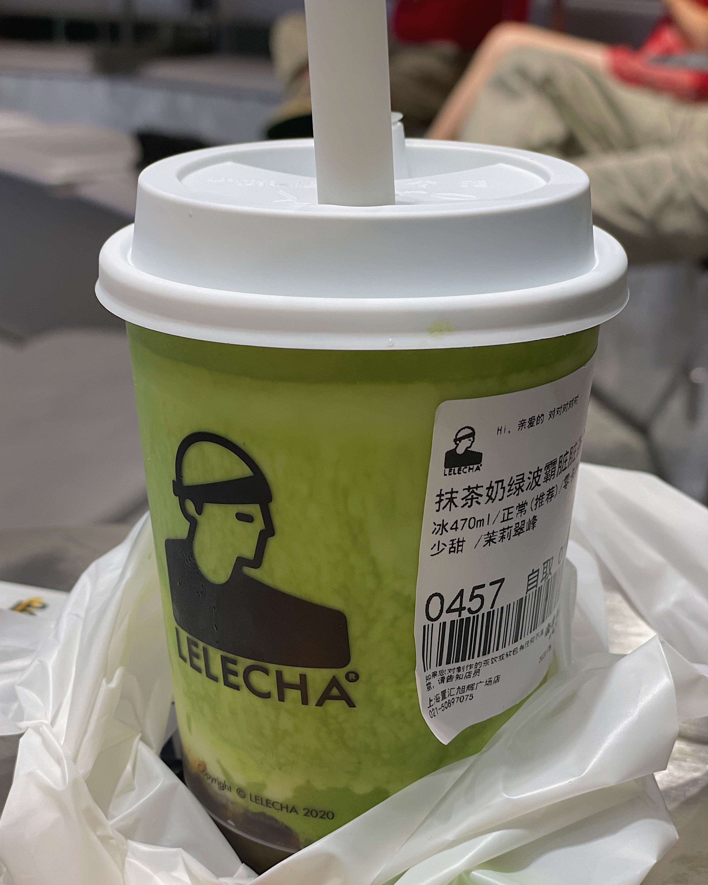
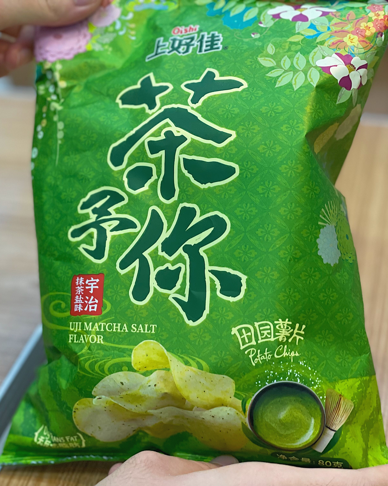

22-08-12
绿绿抹茶龙是什么呢？绿绿抹茶龙相信大家都很熟悉，但是喜欢抹茶的绿绿抹茶龙是怎么回事呢，下面就让小编带大家一起了解吧！
原来，“绿绿抹茶龙”属于茶龙科的抹茶龙属，为该属下的唯一一种，于2022年由中国古生物学家陈某月描述命名。所以，绿绿抹茶龙又名“陈氏抹茶龙”。
绿绿抹茶龙以一身抹茶色及喜爱抹茶而得名。绿绿抹茶龙的长相非常可爱，拥有大大的眼睛和三角形的耳朵，一条约为30cm长的小尾巴，以及6片类似于鳄鱼骨刺的凸起物。不过绿绿抹茶龙坚称自己不是鳄鱼是恐龙，所以科学家推断，绿绿抹茶龙曾经与剑龙有非同一般的亲缘关系。
现在的主流观点认为，绿绿抹茶龙广泛分布于世界上盛产抹茶的地区。图片中所展示的绿绿抹茶龙，就是发现于上海市置汇旭辉遗迹附近。根据古生物学家的初步调查，置汇旭辉遗迹大量产出抹茶冰激凌、抹茶蛋糕、抹茶奶茶、抹茶夹心饼干棒、抹茶薯片、抹茶糖果、抹茶摩卡等等，为绿绿抹茶龙的成长提供了优渥的条件。同时也有研究指出，绿绿抹茶龙在缺少抹茶的情况下，会食用抹茶味的小朋友。关于绿绿抹茶龙是食肉恐龙还是食草恐龙的争论，仍在激烈进行中。
值得注意的是，本次发现的绿绿抹茶龙是人类有史以来发现第一只活恐龙，其已具备与人正常交流的能力。相比于其他恐龙而言，绿绿抹茶龙的身手更为矫健，且存活寿命更长。科学家认为，其喜食抹茶的特点是使其躲过6500万年前那次陨石大撞击的关键因素。绿绿抹茶龙的首次发现便轰动了整个世界，在短短数小时之内便登上了许多国家的头条。在一片呼声之中，一名王姓的恐龙饲养员宣布自己将抚养这只可爱的小恐龙，相信绿绿抹茶龙会过上最幸福的生活。
据传言，环球影业正在推动“绿绿抹茶龙”成为《侏罗纪世界4》的新主角。这一传闻让全球的恐龙迷兴奋不已，那就让我们拭目以待吧。
世界抹茶组织（WMO）宣布，将每一年的8月11日定为“世界抹茶日”，以此来庆祝绿绿抹茶龙在人类世界的诞生。所以，让我们一起吃抹茶冰激凌吧，向绿绿抹茶龙致以最真诚的祝福！
哈根达斯的抹茶冰激凌
抹茶奶绿波霸脏脏茶
饲养员在诱捕绿绿抹茶龙
居然有抹茶薯片
绿绿抹茶龙（左一）和饲养员的合影
评论区